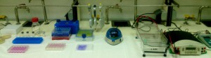

ISTRAŽIVAČKI PROJEKT: IP-2024-05-6548
Naziv projekta: Specifični bioaktivni metaboliti postbiotika i probiotika proizvedeni primjenom nusproizvoda mliječne industrije
Ustanova: Prehrambeno-biotehnološki fakultet Sveučilišta u Zagrebu
Izvor financiranja: Hrvatska zaklada za znanost
Trajanje: 09.12.2024. – 08.12.2027.
Voditelj projekta: prof. dr. sc. Blaženka Kos